Concept Refinement: Time Travel Puzzle Overview
System Assembly
Dan Bloch, Al Mireault, Alice Huang
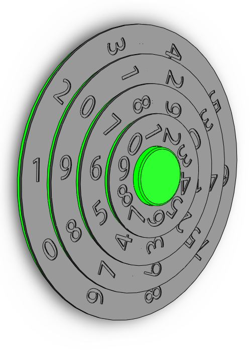
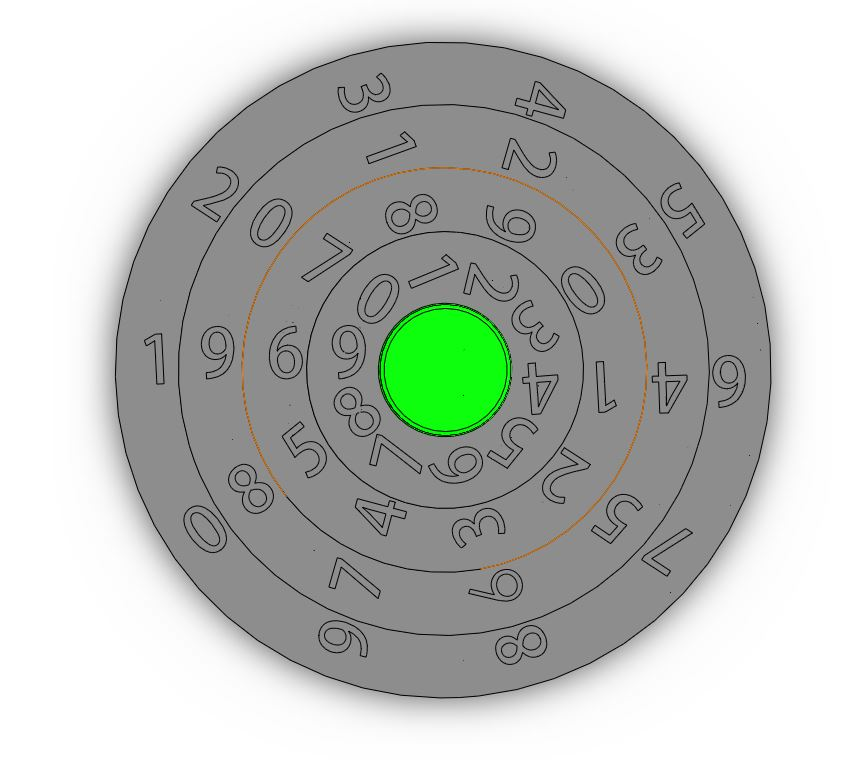
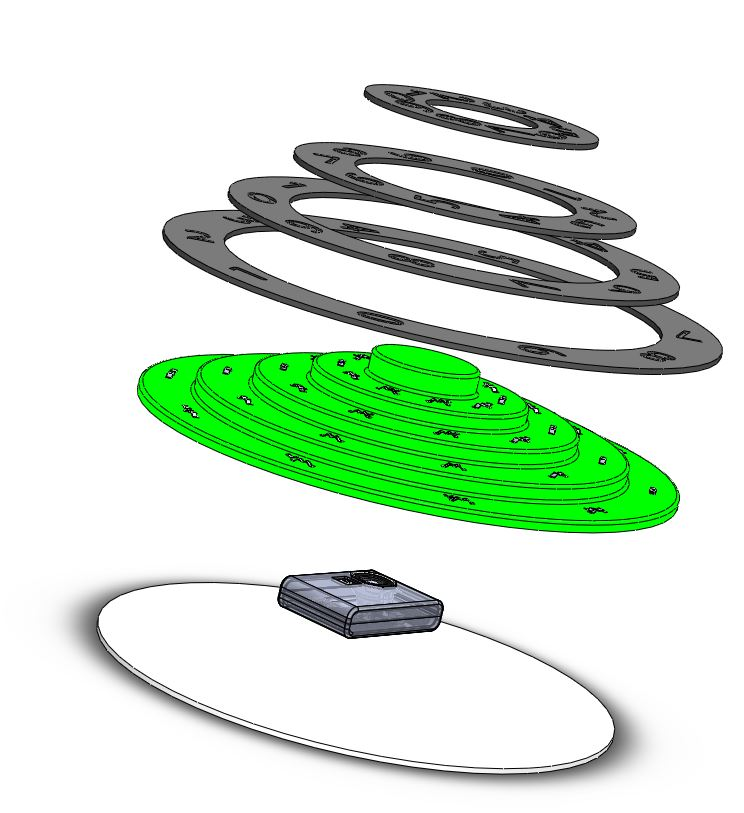
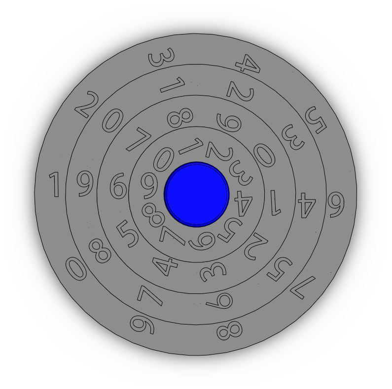
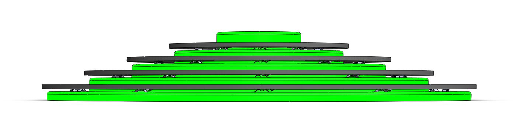
The assembly of the time selection device is pictured above. The system is meant to be permanently mounted on the vertical face of a wall. The system is comprised of four concentric, numbered circles that freely rotate about a fixed axis. (The dials are held within their respective planes using rollers not pictured in the CAD assembly.) The axis itself is a thermal-formed transparent plastic component that resembles a step-pyramid, pictured in color as it will be backlight with LEDs. On the backs of the dials are notches corresponding to each of the ten digits. With each turn of the dial, these notches lock into place with complementary notches mounted on the step-pyramid base. The notches are shown from a side-view below, with the top in a locked position, and the bottom in an unlocked position. The locking notches double as electronic switches and, when the dials are correctly aligned, will be tripped to complete a circuit.
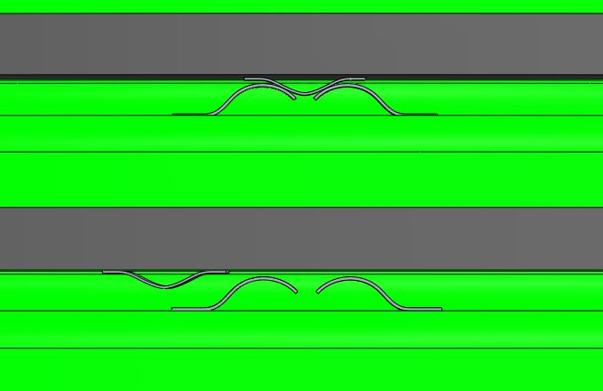
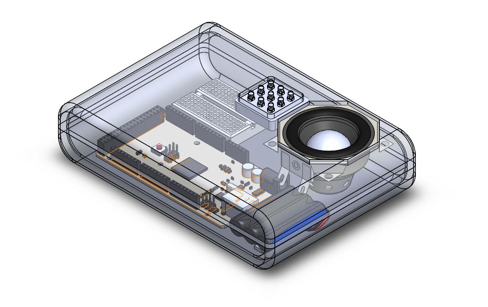
Completing the cicuit sends a signal to a microcontroller housed within the step-pyramid base, hidden from view. The electronic components within this housing include an Arduino microcontroller, a breadboard, a speaker, LEDs, and several batteries, pictured below.
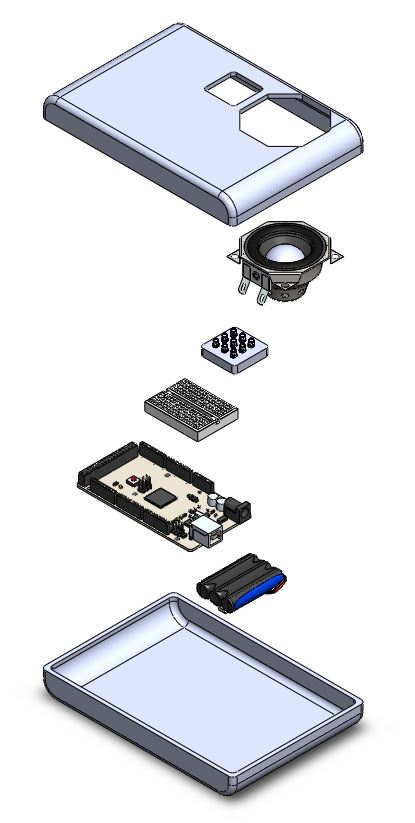
The electronics will work to create the effect of time travel upon the completion of the puzzle. , sending a signal to the microcontroller. When the switches are tripped, the LEDs on the front of the housing will flash and a noise will be activated via the speaker indicating that the combination of dials has been input correctly and time travel has been successful.
The puzzle system will be mounted permanently on the vertical face of a wall. There will be six of these puzzle stations distributed evenly throughout a circular room., each representing an aspect of time (year, month, day, etc.).
A certain combination of numbers and/or characters will need to be set in the correct position on the time selection puzzle in order for the group of users to advance through the adventure. For example, the "Year" puzzle would need to bet to "1969" and the month puzzle would be set to "0012" to witness the first moon landing. The correct combination will be set by turning each disk around its central axis. Setting the correct combination in the correct position will activate the door to the next room. The position of significant characters will be designated to the users by a light along the significant row, demonstrated below.
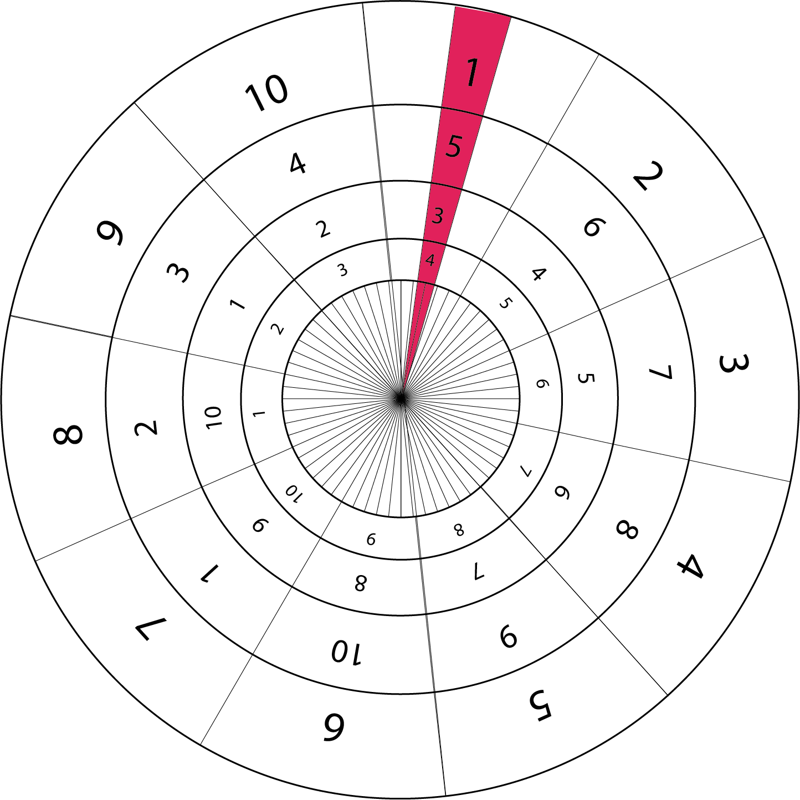
The group of users will enter our "Time Traveller Room" with a clue that lets them know a specific date and time to which they can travel to successfully complete the adventure. Ideally, there will be two given options in time, one leading to the future, and one to the past. Depending on which path the users wish to follow, they will experience their adventure accordingly.
As demonstrated earlier, each puzzle can be backlit with LEDs. This could be used to our advantage to help "reset" the puzzle for the next group. Each aspect of time would be color-coded, with a key given to the users beforehand. For example, green could represent the "year" puzzle, while blue could represent the "month" puzzle. Switching the colors of the LEDs after a group exits the room would serve to switch around the entire puzzle, resetting it for the next group.
Exit Door
Daivon Deans, Ayantu Regassa
The door mechanism is relatively straightforward. A sliding door is suspended on rollers between two panels, with each wall panel containing its own mounted time selection device (mounted time selectors not shown in CAD). This way it can be opened without compromising the shape and symmetric effect of the circular room. The reduced friction from the rollers also allows for the potential automatic actuation of the door upon input of the correct combination of dials, something that could be easily integrated into the current electronics system.
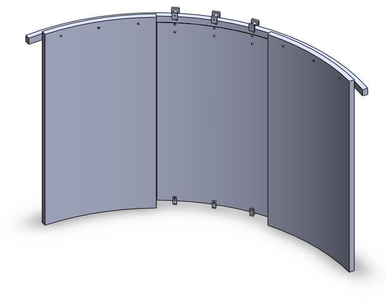
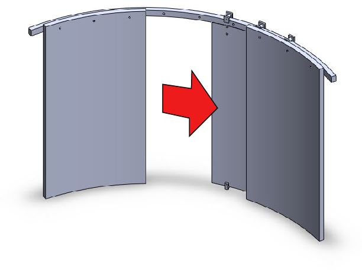
Back to Top
|